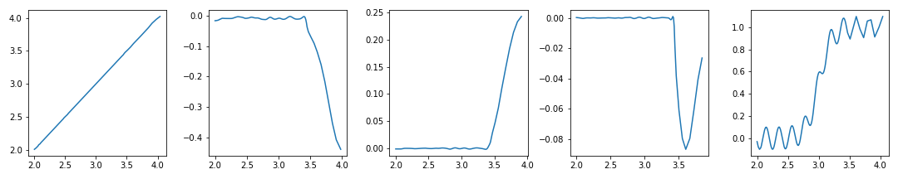
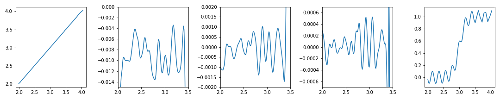
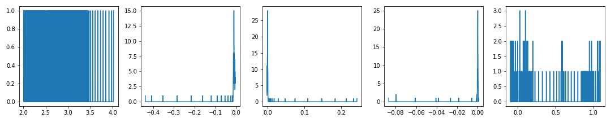
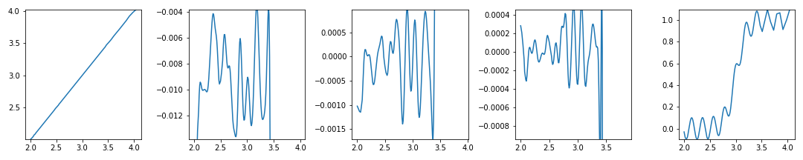
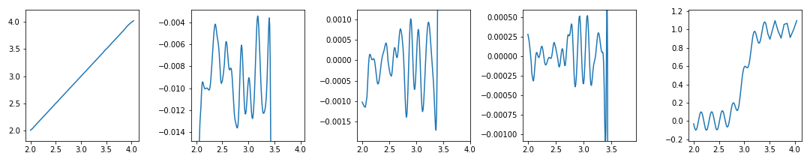
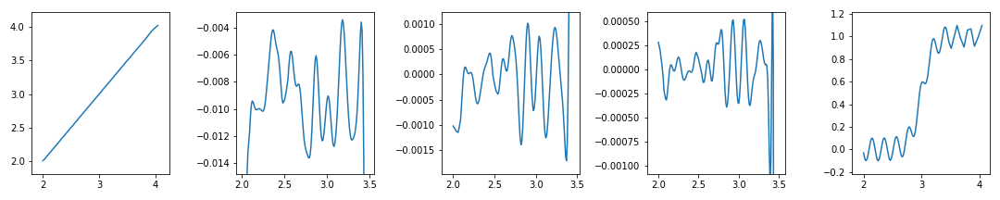
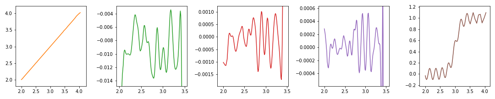
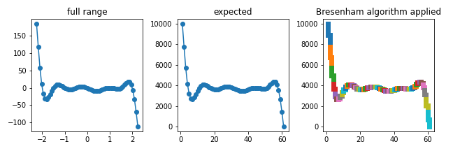

- 그래프에서 중요한 값들이 특정 범위에 몰려있으면 확대를 해야 합니다.
- matplotlib의 object oriented API는
.set_xlim()과.set_ylim()을 제공해 줍니다. - jupyter notebook에서
%matplotlib qt로 선언했다면 GUI로 자유롭게 지정할 수도 있습니다.
- 그러나 잘 보이지도 않는 영역을 찾기 위해 반복적으로 영역을 설정하는 일은 지루합니다.
- 데이터 숫자라도 많으면 다시 그릴때마다 기다려야 하는 과정이 결코 즐겁지 않습니다.
- 데이터의 분포를 이용해 관심영역(Region of Interest)를 자동으로 확대하는 함수를 만들겠습니다.
1. sample data
예제 데이터는
xs=[x1, x2, x3, x4, x5],ys=[y1, y2, y3, y4, y5]로 미리 정의되었습니다.- 여기에서 다운로드 받으실 수 있습니다.
xs와ys의 원소는 모두 1차원numpy.ndarray()입니다.첫 번째와 마지막을 제외하면 y값이 특정 범위에 몰려 있음을 알 수 있습니다.
1
2
3
4
5
6
7
8
9
10
11
12
13
14for i in range(1,6): # 변수 이름을 동적으로 할당
globals()[f'x{i}'] = np.loadtxt(f'x{i}.csv')
globals()[f'y{i}'] = np.loadtxt(f'y{i}.csv')
xs = [x1, x2, x3, x4, x5]
ys = [y1, y2, y3, y4, y5]
# 그림그리기
fig, ax = plt.subplots(ncols=5, figsize=(12,3))
for i in range(5):
ax[i].plot(xs[i], ys[i])
fig.tight_layout()
plt.show()
몇 차례의 iteration을 통해 얻은 최적 범위로 그림을 그리면 이렇게 됩니다.
1
2
3
4
5
6
7ax[1].set_ylim(-0.015,0) # iteration 3회 결과
ax[2].set_ylim(-2e-3, 2e-3) # iteration 4회 결과
ax[3].set_ylim(-7e-4,7e-4) # iteration 4회 결과
ax[1].set_xlim(2, 3.5)
ax[2].set_xlim(2, 3.5)
ax[3].set_xlim(2, 3.5)
두 번째 ~ 네 번째 그래프에서 전체 범위에 묻혀있던 관심영역이 잘 드러났습니다.
첫 번째와 마지막 그래프는 전체가 관심영역이므로 가려지면 안 됩니다.
이런 범위 설정 작업을 반복하지 않도록 자동화하고 싶습니다.
2. data distribution
두 번째 ~ 네 번째 그래프에서 관심영역 외 부분이 단조증가 또는 감소하고 있습니다.
데이터의 빈도를 이용해 이 부분을 제거하고 관심영역에 집중합시다.
numpy.histogram()으로 y 데이터의 구간별 데이터 수를 확인합니다.1
2
3
4
5
6
7
8
9
10
11res = 1000
fig, ax = plt.subplots(ncols=5, figsize=(12,3))
for i, y in enumerate(ys):
ymin, ymax = y.min(), y.max()
yhist, ybins = np.histogram(y, bins=res) # 1000개 구간별 데이터 수를 셉니다.
ax[i].plot(ybins[:-1], yhist)
fig.tight_layout()
plt.show()
두 번째 이후의 그래프에서, 진동하는 구간에 많은 데이터가 몰린 것을 확인할 수 있습니다.
1000개 구간으로 충분히 잘게 나누었기 때문에 데이터가 없는 구간도 있습니다.
3. setting $$y$$ range by bin filtering
- 구간별 데이터 수가 일정(
yth) 이상인 구간만 추립니다. - 그러나 첫 번째 그래프처럼 데이터 수는 적어도 전체를 다 보여줘야 하는 경우가 있습니다.
- 이럴 때를 대비하여 관심영역이 딱히 없다면 전체 구간을 잡도록 예외처리합니다.
1
2
3
4
5
6
7
8
9
10
11
12
13
14
15
16res = 1000
fig, ax = plt.subplots(ncols=5, figsize=(12,3))
for i, y in enumerate(ys):
ymin, ymax = y.min(), y.max()
yhist, ybins = np.histogram(y, bins=res) # 1000개 구간별 데이터 수를 셉니다.
yfoc = ybins[np.where(yhist > yth)[0]]
if len(yfoc) >= 2: # 관심영역이 없을 경우 예외처리
ymin, ymax = yfoc.min(), yfoc.max()
ax[i].plot(xs[i], ys[i])
ax[i].set_ylim(ymin, ymax)
fig.tight_layout()
plt.show()
- y 범위가 너무 빡빡하게 잡혔네요. 여유를 좀 줍시다.
- y range를 계산해서, 사전에 정의된 여유분(
ymargin) 비율만큼 위아래로 더해줍니다.1
2
3
4
5
6
7
8
9
10
11
12
13
14
15
16
17
18
19
20
21
22
23res = 1000
ymargin = 0.1
fig, ax = plt.subplots(ncols=5, figsize=(12,3))
for i, y in enumerate(ys):
ymin, ymax = y.min(), y.max()
yhist, ybins = np.histogram(y, bins=res)
yfoc = ybins[np.where(yhist > yth)[0]]
if len(yfoc) >= 2:
ymin, ymax = yfoc.min(), yfoc.max()
yrange = ymax-ymin # y data의 범위를 계산합니다.
# ymargin 만큼 최대 최소 범위를 확장합니다.
ymin -= yrange*ymargin
ymax += yrange*ymargin
ax[i].plot(xs[i], ys[i])
ax[i].set_ylim(ymin, ymax)
fig.tight_layout()
plt.show()
4. setting $$x$$ range by $$y$$ range
두 번째 ~ 네 번째 그래프 오른쪽이 비어있습니다.
관심영역이 왼쪽으로 치우친 탓입니다. x 범위도 다시 설정해서 그림을 꽉 차게 만들어줍시다.
위에서 만든 코드를 다시 사용하기 좋도록 함수로 정의하겠습니다. 주석도 달고요.
(2020.05.24) 버그를 발견하여 Bresenham’s line algorithm을 추가했습니다.
1
2
3
4
5
6
7
8
9
10
11
12
13
14
15
16
17
18
19
20
21
22
23
24
25
26
27
28
29
30
31
32
33
34
35
36
37
38
39
40
41
42
43
44
45
46
47
48
49
50
51
52
53
54
55
56
57
58
59
60
61
62
63
64
65
66
67
68
69
70
71
72
73
74
75
76
77
78
79
80
81
82
83
84
85
86
87
88
89
90
91
92
93
94
95
96
97
98
99
100
101
102
103
104
105
106
107
108
109
110
111
112
113
114
115
116
117
118
119
120
121
122
123class bresenham:
def __init__(self, start, end):
self.start = list(start)
self.end = list(end)
self.path = []
self.steep = abs(self.end[1]-self.start[1]) > abs(self.end[0]-self.start[0])
if self.steep:
self.start = self.swap(self.start[0],self.start[1])
self.end = self.swap(self.end[0],self.end[1])
if self.start[0] > self.end[0]:
_x0 = int(self.start[0])
_x1 = int(self.end[0])
self.start[0] = _x1
self.end[0] = _x0
_y0 = int(self.start[1])
_y1 = int(self.end[1])
self.start[1] = _y1
self.end[1] = _y0
dx = self.end[0] - self.start[0]
dy = abs(self.end[1] - self.start[1])
error = 0
derr = dy/float(dx)
ystep = 0
y = self.start[1]
if self.start[1] < self.end[1]: ystep = 1
else: ystep = -1
for x in range(self.start[0],self.end[0]+1):
if self.steep:
self.path.append([y,x])
else:
self.path.append([x,y])
error += derr
if error >= 0.5:
y += ystep
error -= 1.0
if self.steep and self.start[1] > self.end[1]:
self.path = list(reversed(self.path))
def swap(self,n1,n2):
return np.array([n2,n1])
def get_focus(x, y, yth=3, xmargin=0.1, ymargin=0.2):
"""
automatically adjust range to of interest.
Parameters
------------------------
x, y : (numpy.ndarray)
yth : (int) default=1.
select data bins if its size equals to or larger than yth
x(y)margin : (float) default= 0.1 (10%).
expand x(y)-directional limits to x(y) range * xmargin
Returns
------------------------
xmin, xmax, ymin, ymax : (floats)
"""
def scale_inv(xscaled, x_num, x_arr):
return xscaled/x_num * (x_arr.max()-x_arr.min()) + x_arr.min()
res_x = len(x)*4
res_y = int((y.max()-y.min())*10000)
# 1. digitize
xd = np.digitize(x, np.linspace(x.min(), x.max(), res_x))
yd = np.digitize(y, np.linspace(y.min(), y.max(), res_y))
points = list(zip(xd, yd))
# 2. apply bresenham
x_interp = []
y_interp = []
for i in range(len(points)-1):
l = bresenham(points[i], points[i+1])
path_ = np.array(l.path).T
x_interp_ = path_[0]
y_interp_ = path_[1]
if i != len(points)-2:
x_interp = np.append(x_interp, x_interp_[:-1])
y_interp = np.append(y_interp, y_interp_[:-1])
else:
x_interp = np.append(x_interp, x_interp_)
y_interp = np.append(y_interp, y_interp_)
# 3. inversion of digitization
x_inv = scale_inv(x_interp, res_x, x)
y_inv = scale_inv(y_interp, res_y, y)
# 4. focusing on ROI
ymin, ymax = y.min(), y.max()
xmin, xmax = x.min(), x.max()
yhist, ybins = np.histogram(y_inv, bins=res_y)
yfoc = ybins[np.where(yhist > yth)[0]]
if len(yfoc) >= 2:
ymin, ymax = yfoc.min(), yfoc.max()
xfoc = x_inv[(y_inv>=ymin) & (y_inv<=ymax)] # select x in y range only
xmin, xmax = min(xfoc), max(xfoc)
xrange = abs(xmax-xmin)
yrange = abs(ymax-ymin)
xmin -= xrange*xmargin
xmax += xrange*xmargin
ymin -= yrange*ymargin
ymax += yrange*ymargin
return xmin, xmax, ymin, ymax
이렇게 함수를 만들어두면 본 코드가 매우 짧아집니다.
1
2
3
4
5
6
7
8
9
10
11
12fig, axes = plt.subplots(ncols=5, figsize=(12,3))
for ax, x, y in list(zip(axes, xs, ys)):
ax.plot(x, y)
xmin, xmax, ymin, ymax = get_focus(x, y)
ax.set_xlim(xmin, xmax)
ax.set_ylim(ymin, ymax)
fig.tight_layout()
plt.show()
모든 그림이 관심영역에 집중되었습니다.
그러나 네번째 그림이 위쪽에 치우친 것이 영 마음에 걸리네요.
데이터 수로 구간을 설정해서 네 번째 데이터 우측의 진동이 잡혀버렸습니다.
네 번째 그래프에만 인자를 다르게 설정해서 가운데로 옮깁시다.
훨씬 엄격한 조건(
yth=3)과 관대한 여백(ymargin=0.2)을 조합합니다.1
2
3
4
5
6
7
8
9
10
11
12
13
14
15
16
17
18
19
20fig, axes = plt.subplots(ncols=5, figsize=(12,3))
count = 0 # 그림 번호입니다.
for ax, x, y in list(zip(axes, xs, ys)):
yth, ymargin = 1, 0.1 # 기본 파라미터를 설정하고
if count == 3: # 4번째 그림만 다른 파라미터를 입력합니다.
yth, ymargin = 3, 0.2
ax.plot(x, y, c=f'C{count+1}') # 마지막 그림이니 색깔도 바꿔봅니다. :)
# 파라미터를 입력받도록 인자를 살려서 함수를 실행합니다.
xmin, xmax, ymin, ymax = get_focus(x, y, yth=yth, ymargin=ymargin)
ax.set_xlim(xmin, xmax)
ax.set_ylim(ymin, ymax)
count += 1
fig.tight_layout()
plt.show()
이제 웬만한 그래프는 자동으로 관심영역을 확대할 수 있습니다.
그러나 관심영역 밖에 중요한 메시지가 있을 수 있습니다.
반드시 전체를 먼저 확인한 후에 확대하고, 확대 후에도 제대로 됐는지 확인합시다.
5. Bug fix : missing bins (2020.05.24.)
간혹 아래와 같이 전혀 의도치 않은 구간으로 확대되는 경우가 있었습니다.
1
2
3
4
5
6
7
8
9
10
11
12
13
14
15
16
17
18
19x = np.linspace(-2.25, 2.25, 61)
y = (x-2.5)*(x-2)*(x-1.5)*(x-1)*(x-1)*x*(x+0.5)*(x+1)*(x+1.5)*(x+2)*(x+2.5)
fig, ax = plt.subplots(ncols=3, figsize=(9,3))
ax[0].plot(x, y, 'o-')
ax[1].plot(x, y, 'o-')
ax[2].plot(x, y, 'o-')
# expected
ax[1].set_ylim(-40,30)
# get_focuse()
xmin, xmax, ymin, ymax = get_focus(x, y, yth=1, ymargin=0.2)
ax[2].set_xlim(xmin, xmax)
ax[2].set_ylim(ymin, ymax)
ax[0].set_title('full range')
ax[1].set_title('expected')
ax[2].set_title('improper focusing')데이터를 선그래프로 표현하면 점과 점 사이가 이어져 데이터가 밀집한 구간을 히스토그램으로 처리할 수 있을 듯 하지만, 실제로 선에 해당하는 구간은 데이터가 존재하지 않아 빈도 측정시 관심영역으로 감지될 수 없습니다.
데이터가 교묘하게(?) 조금씩 위아래로 어긋나있을 때 이런 일들이 발생하는데, 이를 방지하기 위해 선을 전부 데이터로 채워주었습니다.
무한한 경우의 수를 모두 채울 수는 없으므로 공간을 적당히 이산화하고, 여기에 Bresenham’s line algorithm을 차용하였습니다.
5.1. Data quantization in different scales
- 데이터를 정수 공간으로 매핑합니다: x, y scale이 달라졌습니다.
1
2xd = np.digitize(x, np.linspace(x.min(), x.max(), len(x)))
yd = np.digitize(y, np.linspace(y.min(), y.max(), 10000))
5.2. Application of Bresenham’s line algorithm
- 정수 공간에서 점 사이를 메웁니다.
1
2
3
4
5
6
7
8
9
10
11
12
13
14
15
16
17points = list(zip(xd, yd))
x_interp = []
y_interp = []
for i in range(len(points)-1):
l = bresenham(points[i], points[i+1])
path = np.array(l.path).T
x_interp_ = path[0]
y_interp_ = path[1]
if i != len(points)-2:
x_interp = np.append(x_interp, x_interp_[:-1])
y_interp = np.append(y_interp, y_interp_[:-1])
else:
x_interp = np.append(x_interp, x_interp_)
y_interp = np.append(y_interp, y_interp_)
5.3. Map to Original scale
- 정수 공간에 메워진 데이터를 다시 원래의 공간으로 가져옵니다.
1
2
3
4
5def scale_inv(xscaled, x_num, x_arr):
return xscaled/x_num * (x_arr.max()-x_arr.min()) + x_arr.min()
x_inv = scale_inv(x_interp, len(x), x)
y_inv = scale_inv(y_interp, 10000, y)
5.4. apply (previous) get_focus()
- 변환된 데이터에 앞의
get_focus()를 그대로 적용합니다. - 기대한 그래프(expected)와 비교했을 때 상당히 합리적인 범위로 조정되었음을 알 수 있습니다.
1
2
3
4
5ax[3].plot(x, y, 'o-', c='g')
xmin, xmax, ymin, ymax = get_focus(x_inv, y_inv, yth=1, ymargin=0.2)
ax[3].set_xlim(xmin, xmax)
ax[3].set_ylim(ymin, ymax)
6. summary
- 위 5.1.~5.4.를
get_focus()안에 모두 탑재하였습니다. - 본 기능을 사용하실 때는
class bresenham과 함께get_focus()를 그대로 사용하시면 됩니다.